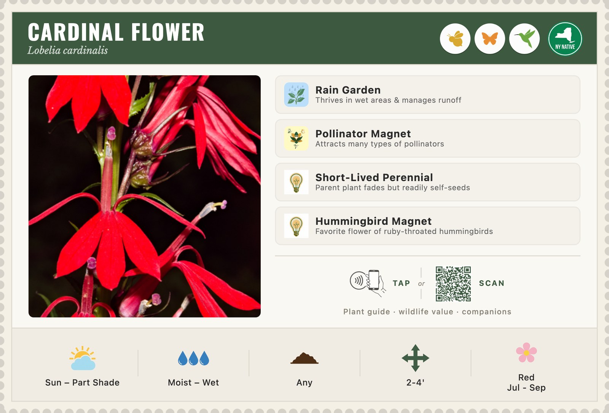
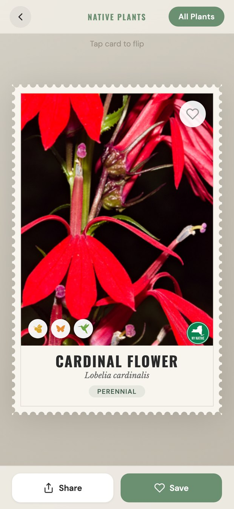
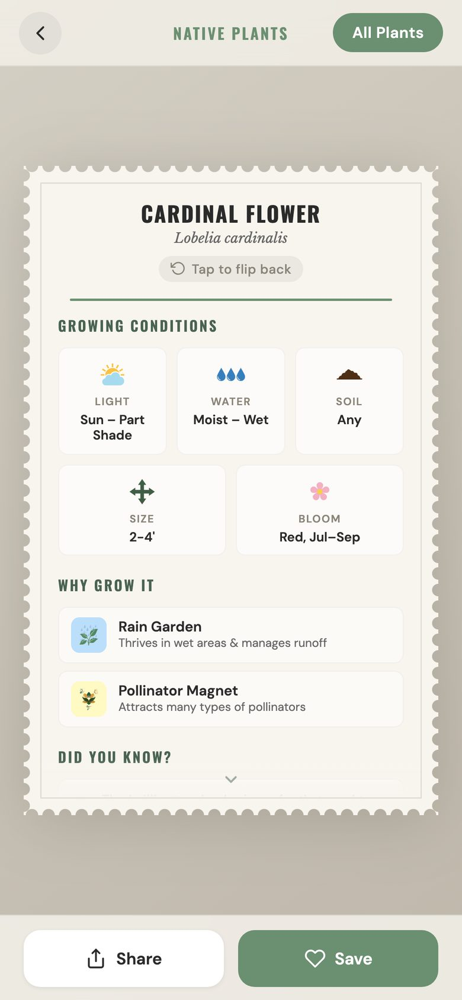
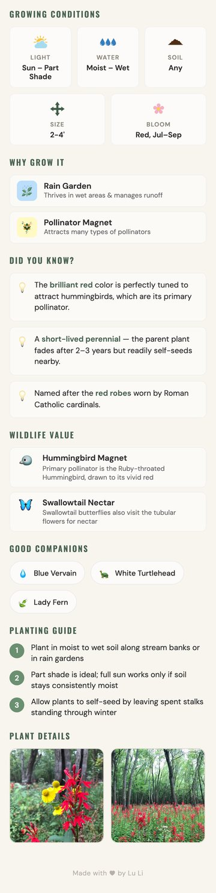

A card in the ground tells you what the plant needs, what it feeds, and whether it would work where you garden. Scan the code and the rest of it comes home with you.

The card holds what you need standing in front of the plant. The page holds what you want later — at home, deciding whether to plant it, and where.



Search the full collection by common or scientific name — or begin from the corner of the garden that is giving you trouble.
Browse all plantsCards and pages are generated from one plant dataset, so a group with its own species list can produce its own set. If yours is thinking about something like this — or you have spotted something wrong on a plant page — send a message.
It helps to say roughly how many species you have in mind and when you would need them.
Message on FacebookDevelopers: the project is on GitHub.